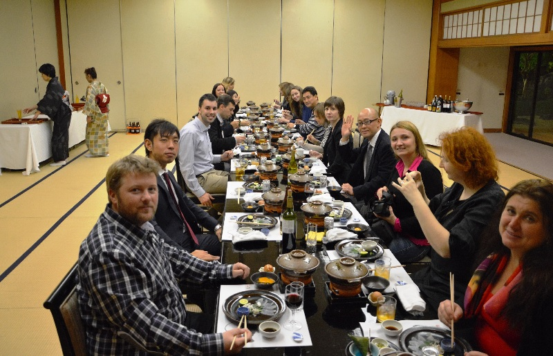
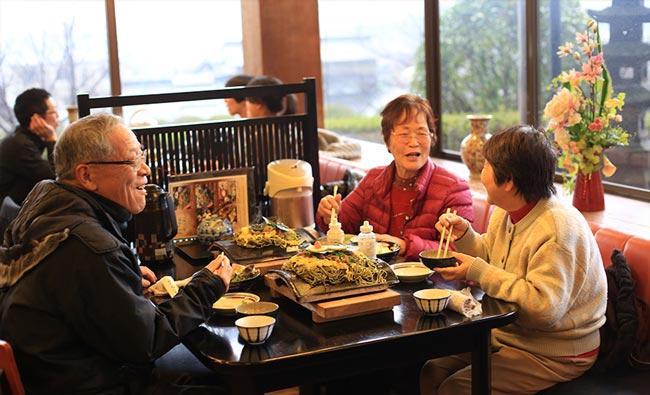
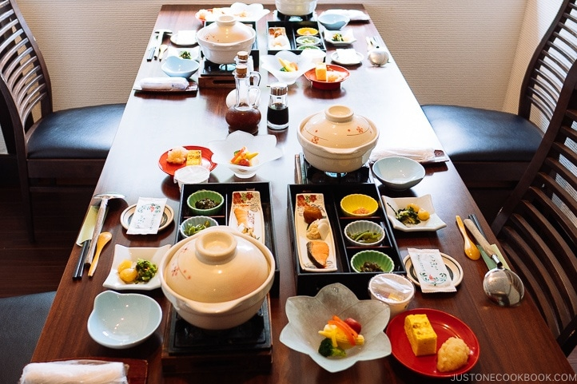
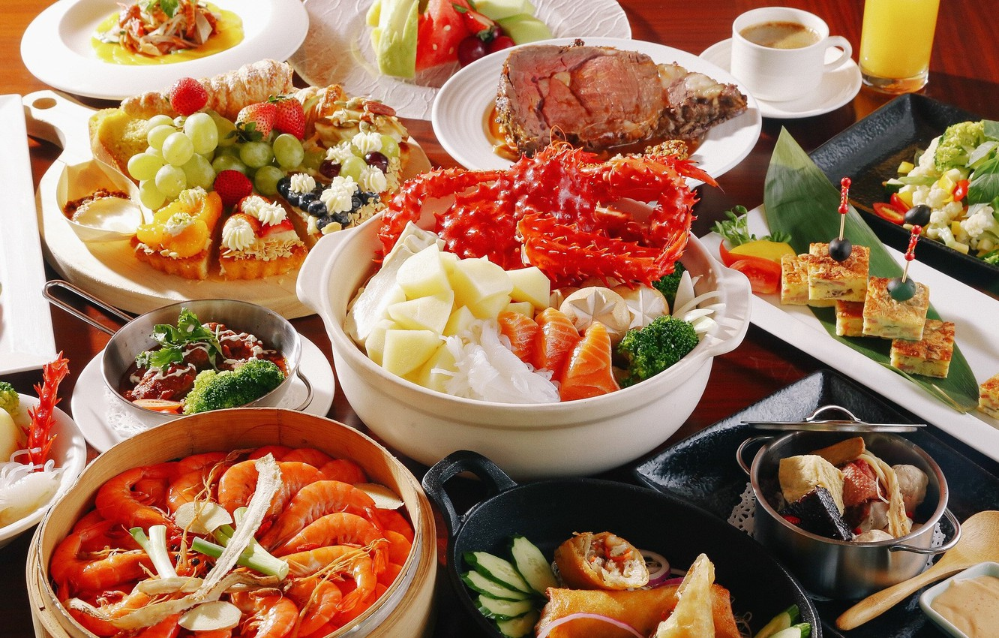

Catering services
Yoko's Kitchen not only offers educational materials, like
courses, masterclasses and et cetera. We are offering also a catering
services (indoor food preparation, outdoor cooking, contract
catering, social catering, beverage and cocktail catering). You want
to make a gorgeous banquet for yourself and your colleagues? Maybe
celebrate something important, like birthday? You can call us on the
number +372 2174 9820 or write to us by our Email
YokoKitchen666@gmail.com to order our services for your plans.
We can discuss time and opportunities to make your special date even
more memorable!
(The price depends on distance, number of people and time)
Below are pictures of our banquets, dishes and clients:



